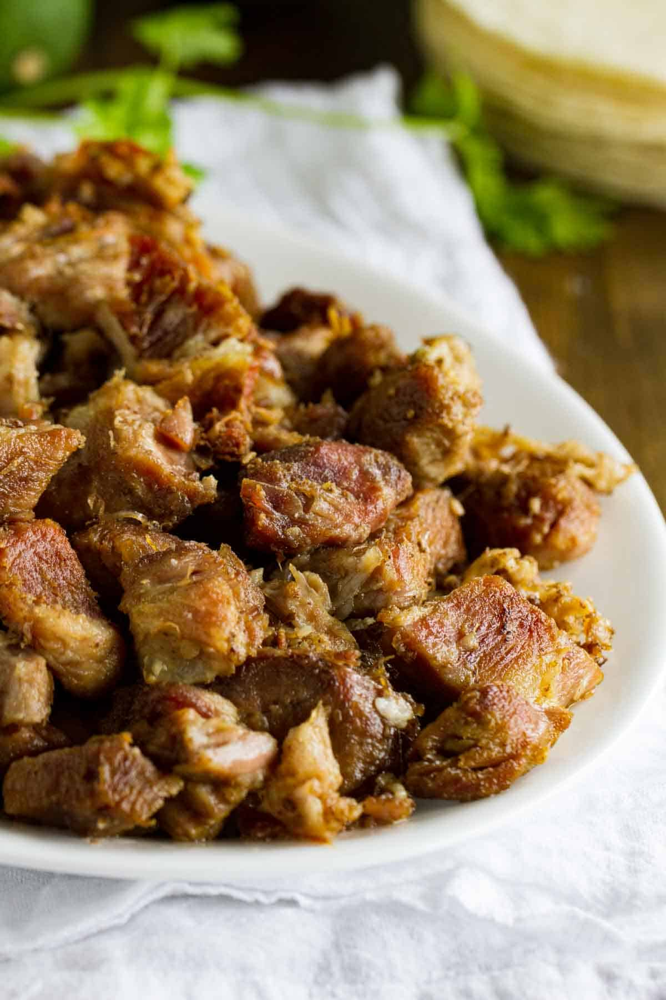

Carnitas

Description
These pork carnitas are crispy, fatty and delicious.
Serve with warm tortillas or over rice and get
ready to have the time of your life.
Ingredients
- 3lbs pork shoulder
- 1 medium orange
- 1 medium white onion
- 2-8 cloves garlic to taste
- 1 tbsp salt
- 1/2 cup vegetable oil
Steps
- Preheat the oven to 350 degrees.
- Cut up the pork. You want 2-3 inch chunks.
Place in an 8x12 (or similar) baking dish, cover
with salt and mix thoroughly.
- Peel the garlic, quarter the onion and orange.
Squeeze out the orange into the dish, then wedge
everything in with the pork. Get everything
packed tight in a single layer.
- Pour oil over your carnitas mixture
to cover (important!) then cover
the dish tightly with a lid or foil.
- Toss that bad boy in the oven for like 3
hours.
- Take it out and spread the cooked pork on
a baking sheet, then skim some of the fat
from the baking dish and drizzle generously
over top
- Pop that sucker under the broiler, taking
out and stirring every 3 minutes until
your desired crispiness is achieved
- You did it, you magnificent bastard. For
extra credit, you can take the pan juices
and blend them up with some cooked tomatillos
for a nice salsa verde to go on top.
- Heat (or make) some tortillas and go to town.
You know how to eat tacos.